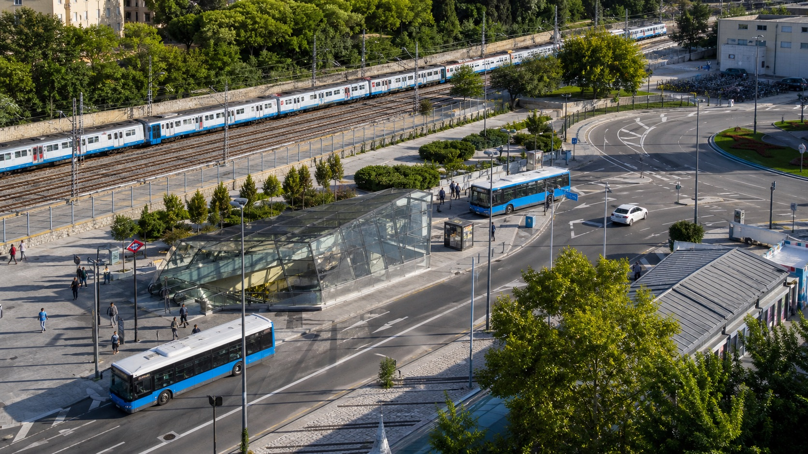

Metro
Capillare, frequente e semplice per orientarsi. Perfetta per centro, Moncloa, Argüelles, Chamberi, Sol, Retiro e molti quartieri universitari.
Muoversi a Madrid
La rete madrilena e' uno dei grandi vantaggi dell'Erasmus: permette di vivere in quartieri diversi e raggiungere campus anche fuori dal centro, ma va capita prima di scegliere casa.

Nel 2026 l'Abono Joven 30 giorni costa 10 € e permette agli utenti sotto i 26 anni di viaggiare in tutta la Comunita' di Madrid. E' una delle spese piu' convenienti per chi fa Erasmus a Madrid.
Per usarlo serve la Tarjeta Transporte Publico personale, su cui caricare l'abbonamento. Puoi informarti prima della partenza e prenotare la richiesta quando possibile, soprattutto se arrivi nei periodi di alta domanda.
Rete quotidiana
Madrid non si vive solo in metro: il mezzo migliore dipende da quartiere, campus, orario e abitudini serali.
Capillare, frequente e semplice per orientarsi. Perfetta per centro, Moncloa, Argüelles, Chamberi, Sol, Retiro e molti quartieri universitari.
Utile per tragitti trasversali dove la metro obbliga a cambiare. Di notte alcune linee notturne aiutano a rientrare senza taxi.
Fondamentale per Cantoblanco, Getafe, Leganes e collegamenti con stazioni come Atocha, Nuevos Ministerios e Chamartin.
Servono campus e comuni fuori Madrid. Guarda frequenza, ultima corsa e fermata esatta.
In zone come Madrid Rio, Retiro o centro puo' essere piacevole, ma traffico e caldo estivo richiedono buon senso.
Barajas e' collegato con metro, bus e Cercanias. Con abbonamento valido in zona A puoi evitare il supplemento metro aeroporto.
Casa-campus
Prima di firmare una stanza, simula il percorso nei giorni e negli orari in cui avrai lezione.
| Se studi qui | Controlla questi collegamenti | Zone da valutare |
|---|---|---|
| Ciudad Universitaria | Metro Moncloa, Ciudad Universitaria, autobus universitari | Moncloa, Argüelles, Chamberi, Cuatro Caminos |
| Cantoblanco | Cercanias da Chamartin, Nuevos Ministerios o Sol secondo orario | Chamartin, Tetuán, Plaza Castilla, Chamberi |
| Getafe o Leganes | Cercanias, metro sud, bus interurbani | Getafe, Leganes, Embajadores, Atocha, La Latina |
| Vicálvaro o Mostoles | Metro, Cercanias e tempi serali | Vicálvaro, Atocha, zone con connessione diretta |
Approfondisci la sede del tuo ateneo nella pagina universita' a Madrid Erasmus.